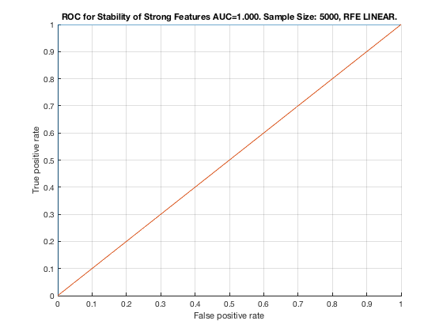

Feature Stability of RFE_LINEAR on ErrNet with 5000 samples.
unit_stability_type(5000, 2, "ErrNet")
Table 130. Feature Stability of RFE LINEAR on ErrNet with 5000 samples.
________________________________________________________________________
SELECTED COUNTS: Strong=23, Weak=228, Irrelevant=0
TOTAL COUNTS: Strong=23, Weak=1300, Irrelevant=4
Feature_Number Stability Type Path_Length N_MBS Equivalence
______________ _________ ____________ ___________ _____ ___________
22 ' 0.904 ' ' STRONG ' 2 0 21
23 ' 0.888 ' ' STRONG ' 3 0 21
21 ' 0.880 ' ' STRONG ' 1 0 21
20 ' 0.762 ' ' STRONG ' 3 0 18
19 ' 0.760 ' ' STRONG ' 2 0 18
18 ' 0.758 ' ' STRONG ' 1 0 18
1 ' 0.580 ' ' STRONG ' 1 0 1
3 ' 0.558 ' ' STRONG ' 4 0 1
4 ' 0.552 ' ' STRONG ' 4 0 1
5 ' 0.552 ' ' STRONG ' 3 0 1
2 ' 0.550 ' ' STRONG ' 2 0 1
6 ' 0.550 ' ' STRONG ' 3 0 1
17 ' 0.388 ' ' STRONG ' 4 0 12
10 ' 0.382 ' ' STRONG ' 4 54 7
14 ' 0.380 ' ' STRONG ' 3 108 12
7 ' 0.378 ' ' STRONG ' 1 216 7
13 ' 0.378 ' ' STRONG ' 2 324 12
11 ' 0.376 ' ' STRONG ' 4 486 7
15 ' 0.376 ' ' STRONG ' 3 648 12
8 ' 0.374 ' ' STRONG ' 2 864 7
16 ' 0.374 ' ' STRONG ' 2 1080 12
9 ' 0.368 ' ' STRONG ' 3 1350 7
12 ' 0.366 ' ' STRONG ' 1 1620 12
787 ' 0.088 ' ' weak ' 5 1620 28
694 ' 0.082 ' ' weak ' 4 1620 39
969 ' 0.082 ' ' weak ' 5 1620 28
1255 ' 0.076 ' ' weak ' 5 1620 28
345 ' 0.074 ' ' weak ' 5 1620 28
735 ' 0.074 ' ' weak ' 5 1620 28
1214 ' 0.072 ' ' weak ' 4 1620 39
564 ' 0.070 ' ' weak ' 4 1620 39
111 ' 0.068 ' ' weak ' 5 1620 28
408 ' 0.068 ' ' weak ' 4 1620 39
434 ' 0.066 ' ' weak ' 4 1620 39
122 ' 0.064 ' ' weak ' 4 1620 39
163 ' 0.064 ' ' weak ' 5 1620 28
278 ' 0.064 ' ' weak ' 4 1620 39
616 ' 0.064 ' ' weak ' 4 1620 39
70 ' 0.062 ' ' weak ' 4 1620 39
772 ' 0.062 ' ' weak ' 4 1620 39
917 ' 0.062 ' ' weak ' 5 1620 28
1162 ' 0.062 ' ' weak ' 4 1620 39
226 ' 0.060 ' ' weak ' 4 1620 39
709 ' 0.060 ' ' weak ' 5 1620 28
1032 ' 0.060 ' ' weak ' 4 1620 39
319 ' 0.058 ' ' weak ' 5 1620 28
371 ' 0.058 ' ' weak ' 5 1620 28
397 ' 0.058 ' ' weak ' 5 1620 28
1058 ' 0.058 ' ' weak ' 4 1620 39
1240 ' 0.058 ' ' weak ' 4 1620 39
460 ' 0.056 ' ' weak ' 4 1620 39
746 ' 0.056 ' ' weak ' 4 1620 39
943 ' 0.056 ' ' weak ' 5 1620 28
241 ' 0.054 ' ' weak ' 5 1620 28
449 ' 0.054 ' ' weak ' 5 1620 28
657 ' 0.054 ' ' weak ' 5 1620 28
1047 ' 0.054 ' ' weak ' 5 1620 28
174 ' 0.052 ' ' weak ' 4 1620 39
1292 ' 0.050 ' ' weak ' 4 1620 39
501 ' 0.048 ' ' weak ' 5 1620 28
642 ' 0.048 ' ' weak ' 4 1620 39
995 ' 0.048 ' ' weak ' 5 1620 28
1293 ' 0.048 ' ' weak ' 3 1620 40
486 ' 0.046 ' ' weak ' 4 1620 39
631 ' 0.046 ' ' weak ' 5 1620 28
891 ' 0.046 ' ' weak ' 5 1620 28
1021 ' 0.046 ' ' weak ' 5 1620 28
579 ' 0.044 ' ' weak ' 5 1620 28
189 ' 0.042 ' ' weak ' 5 1620 28
902 ' 0.042 ' ' weak ' 4 1620 39
903 ' 0.042 ' ' weak ' 3 1620 40
1189 ' 0.042 ' ' weak ' 3 1620 40
1307 ' 0.042 ' ' weak ' 5 1620 28
148 ' 0.040 ' ' weak ' 4 1620 39
330 ' 0.040 ' ' weak ' 4 1620 39
487 ' 0.040 ' ' weak ' 3 1620 40
720 ' 0.040 ' ' weak ' 4 1620 39
876 ' 0.040 ' ' weak ' 4 1620 39
1084 ' 0.040 ' ' weak ' 4 1620 39
227 ' 0.038 ' ' weak ' 3 1620 40
527 ' 0.038 ' ' weak ' 5 1620 28
137 ' 0.036 ' ' weak ' 5 1620 28
539 ' 0.036 ' ' weak ' 3 1620 40
1177 ' 0.036 ' ' weak ' 5 1620 28
1203 ' 0.036 ' ' weak ' 5 1620 28
96 ' 0.034 ' ' weak ' 4 1620 39
409 ' 0.034 ' ' weak ' 3 1620 40
850 ' 0.034 ' ' weak ' 4 1620 39
267 ' 0.030 ' ' weak ' 5 1620 28
423 ' 0.030 ' ' weak ' 5 1620 28
1111 ' 0.030 ' ' weak ' 3 1620 40
71 ' 0.028 ' ' weak ' 3 1620 40
252 ' 0.028 ' ' weak ' 4 1620 39
279 ' 0.028 ' ' weak ' 3 1620 40
305 ' 0.028 ' ' weak ' 3 1620 40
538 ' 0.028 ' ' weak ' 4 1620 39
553 ' 0.028 ' ' weak ' 5 1620 28
668 ' 0.028 ' ' weak ' 4 1620 39
695 ' 0.028 ' ' weak ' 3 1620 40
761 ' 0.028 ' ' weak ' 5 1620 28
865 ' 0.028 ' ' weak ' 5 1620 28
1006 ' 0.028 ' ' weak ' 4 1620 39
1266 ' 0.028 ' ' weak ' 4 1620 39
605 ' 0.026 ' ' weak ' 5 1620 28
929 ' 0.026 ' ' weak ' 3 1620 40
1110 ' 0.026 ' ' weak ' 4 1620 39
1188 ' 0.026 ' ' weak ' 4 1620 39
1241 ' 0.026 ' ' weak ' 3 1620 40
1267 ' 0.026 ' ' weak ' 3 1620 40
1281 ' 0.026 ' ' weak ' 5 1620 28
1318 ' 0.026 ' ' weak ' 4 1620 39
293 ' 0.024 ' ' weak ' 5 1620 28
331 ' 0.024 ' ' weak ' 3 1620 40
954 ' 0.024 ' ' weak ' 4 1620 39
980 ' 0.024 ' ' weak ' 4 1620 39
1125 ' 0.024 ' ' weak ' 5 1620 28
435 ' 0.022 ' ' weak ' 3 1620 40
683 ' 0.022 ' ' weak ' 5 1620 28
825 ' 0.022 ' ' weak ' 3 1620 40
981 ' 0.022 ' ' weak ' 3 1620 40
97 ' 0.020 ' ' weak ' 3 1620 40
123 ' 0.020 ' ' weak ' 3 1620 40
149 ' 0.020 ' ' weak ' 3 1620 40
382 ' 0.020 ' ' weak ' 4 1620 39
839 ' 0.020 ' ' weak ' 5 1620 28
1033 ' 0.020 ' ' weak ' 3 1620 40
356 ' 0.018 ' ' weak ' 4 1620 39
461 ' 0.018 ' ' weak ' 3 1620 40
512 ' 0.018 ' ' weak ' 4 1620 39
721 ' 0.018 ' ' weak ' 3 1620 40
747 ' 0.018 ' ' weak ' 3 1620 40
798 ' 0.018 ' ' weak ' 4 1620 39
928 ' 0.018 ' ' weak ' 4 1620 39
39 ' 0.016 ' ' weak ' 4 1620 39
200 ' 0.016 ' ' weak ' 4 1620 39
304 ' 0.016 ' ' weak ' 4 1620 39
357 ' 0.016 ' ' weak ' 3 1620 40
590 ' 0.016 ' ' weak ' 4 1620 39
824 ' 0.016 ' ' weak ' 4 1620 39
1059 ' 0.016 ' ' weak ' 3 1620 40
1229 ' 0.016 ' ' weak ' 5 1620 28
28 ' 0.014 ' ' weak ' 5 1620 28
59 ' 0.014 ' ' weak ' 5 1620 28
85 ' 0.014 ' ' weak ' 5 1620 28
215 ' 0.014 ' ' weak ' 5 1620 28
475 ' 0.014 ' ' weak ' 5 1620 28
813 ' 0.014 ' ' weak ' 5 1620 28
1073 ' 0.014 ' ' weak ' 5 1620 28
1099 ' 0.014 ' ' weak ' 5 1620 28
1136 ' 0.014 ' ' weak ' 4 1620 39
617 ' 0.012 ' ' weak ' 3 1620 40
1007 ' 0.012 ' ' weak ' 3 1620 40
1085 ' 0.012 ' ' weak ' 3 1620 40
1319 ' 0.012 ' ' weak ' 3 1620 40
121 ' 0.010 ' ' weak ' 5 1620 38
253 ' 0.010 ' ' weak ' 3 1620 40
565 ' 0.010 ' ' weak ' 3 1620 40
591 ' 0.010 ' ' weak ' 3 1620 40
643 ' 0.010 ' ' weak ' 3 1620 40
877 ' 0.010 ' ' weak ' 3 1620 40
1151 ' 0.010 ' ' weak ' 5 1620 28
1163 ' 0.010 ' ' weak ' 3 1620 40
1215 ' 0.010 ' ' weak ' 3 1620 40
173 ' 0.008 ' ' weak ' 5 1620 38
225 ' 0.008 ' ' weak ' 5 1620 38
433 ' 0.008 ' ' weak ' 5 1620 38
589 ' 0.008 ' ' weak ' 5 1620 38
875 ' 0.008 ' ' weak ' 5 1620 38
955 ' 0.008 ' ' weak ' 3 1620 40
38 ' 0.006 ' ' weak ' 5 1620 38
40 ' 0.006 ' ' weak ' 3 1620 40
175 ' 0.006 ' ' weak ' 3 1620 40
201 ' 0.006 ' ' weak ' 3 1620 40
383 ' 0.006 ' ' weak ' 3 1620 40
513 ' 0.006 ' ' weak ' 3 1620 40
537 ' 0.006 ' ' weak ' 5 1620 38
641 ' 0.006 ' ' weak ' 5 1620 38
669 ' 0.006 ' ' weak ' 3 1620 40
773 ' 0.006 ' ' weak ' 3 1620 40
799 ' 0.006 ' ' weak ' 3 1620 40
979 ' 0.006 ' ' weak ' 5 1620 38
1265 ' 0.006 ' ' weak ' 5 1620 38
147 ' 0.004 ' ' weak ' 5 1620 38
199 ' 0.004 ' ' weak ' 5 1620 38
213 ' 0.004 ' ' weak ' 5 1620 26
329 ' 0.004 ' ' weak ' 5 1620 38
369 ' 0.004 ' ' weak ' 5 1620 26
422 ' 0.004 ' ' weak ' 6 1620 27
644 ' 0.004 ' ' weak ' 3 1620 41
693 ' 0.004 ' ' weak ' 5 1620 38
851 ' 0.004 ' ' weak ' 3 1620 40
950 ' 0.004 ' ' weak ' 7 1620 35
953 ' 0.004 ' ' weak ' 5 1620 38
994 ' 0.004 ' ' weak ' 6 1620 27
1031 ' 0.004 ' ' weak ' 5 1620 38
1057 ' 0.004 ' ' weak ' 5 1620 38
1109 ' 0.004 ' ' weak ' 5 1620 38
1213 ' 0.004 ' ' weak ' 5 1620 38
32 ' 0.002 ' ' weak ' 8 1620 32
57 ' 0.002 ' ' weak ' 5 1620 26
88 ' 0.002 ' ' weak ' 9 1620 31
95 ' 0.002 ' ' weak ' 5 1620 38
98 ' 0.002 ' ' weak ' 3 1620 41
115 ' 0.002 ' ' weak ' 8 1620 32
167 ' 0.002 ' ' weak ' 8 1620 32
194 ' 0.002 ' ' weak ' 8 1620 33
240 ' 0.002 ' ' weak ' 6 1620 27
251 ' 0.002 ' ' weak ' 5 1620 38
297 ' 0.002 ' ' weak ' 8 1620 32
349 ' 0.002 ' ' weak ' 8 1620 32
407 ' 0.002 ' ' weak ' 5 1620 38
436 ' 0.002 ' ' weak ' 3 1620 41
478 ' 0.002 ' ' weak ' 9 1620 31
479 ' 0.002 ' ' weak ' 8 1620 32
485 ' 0.002 ' ' weak ' 5 1620 38
505 ' 0.002 ' ' weak ' 8 1620 32
532 ' 0.002 ' ' weak ' 8 1620 33
557 ' 0.002 ' ' weak ' 8 1620 32
563 ' 0.002 ' ' weak ' 5 1620 38
609 ' 0.002 ' ' weak ' 8 1620 32
635 ' 0.002 ' ' weak ' 8 1620 32
687 ' 0.002 ' ' weak ' 8 1620 32
713 ' 0.002 ' ' weak ' 8 1620 32
719 ' 0.002 ' ' weak ' 5 1620 38
722 ' 0.002 ' ' weak ' 3 1620 41
739 ' 0.002 ' ' weak ' 8 1620 32
797 ' 0.002 ' ' weak ' 5 1620 38
800 ' 0.002 ' ' weak ' 3 1620 41
817 ' 0.002 ' ' weak ' 8 1620 32
852 ' 0.002 ' ' weak ' 3 1620 41
869 ' 0.002 ' ' weak ' 8 1620 32
916 ' 0.002 ' ' weak ' 6 1620 27
972 ' 0.002 ' ' weak ' 9 1620 31
973 ' 0.002 ' ' weak ' 8 1620 32
998 ' 0.002 ' ' weak ' 9 1620 31
999 ' 0.002 ' ' weak ' 8 1620 32
1060 ' 0.002 ' ' weak ' 3 1620 41
1077 ' 0.002 ' ' weak ' 8 1620 32
1083 ' 0.002 ' ' weak ' 5 1620 38
1098 ' 0.002 ' ' weak ' 6 1620 27
1129 ' 0.002 ' ' weak ' 8 1620 32
1137 ' 0.002 ' ' weak ' 3 1620 40
1138 ' 0.002 ' ' weak ' 3 1620 41
1155 ' 0.002 ' ' weak ' 8 1620 32
1190 ' 0.002 ' ' weak ' 3 1620 41
1233 ' 0.002 ' ' weak ' 8 1620 32
1259 ' 0.002 ' ' weak ' 8 1620 32
1268 ' 0.002 ' ' weak ' 3 1620 41
1284 ' 0.002 ' ' weak ' 9 1620 31
1291 ' 0.002 ' ' weak ' 5 1620 38
1320 ' 0.002 ' ' weak ' 3 1620 41
Figure 130. ROC for Stability of Strong Features AUC=1.000. Sample Size: 5000, RFE LINEAR.
___________________________________________________________________________________________
